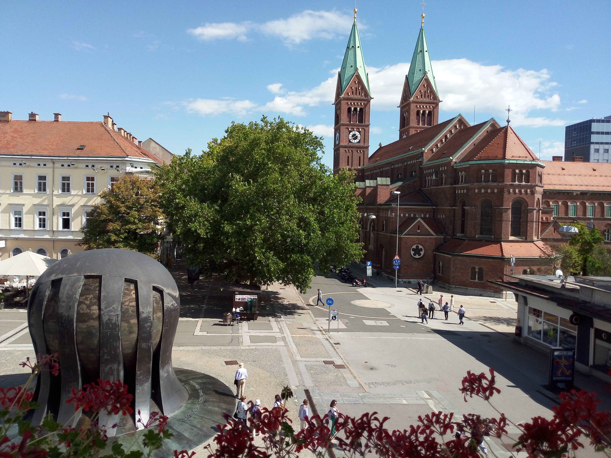

City View, Maribor
Slovenia · Maribor
Maribor, Slovenia's second-largest city, lies along the Drava River in the country's northeast, surrounded by rolling hills and the vineyards of the Štajerska region. Its urban landscape brings together historic buildings, lively squares, riverside promenades and views towards the green slopes of the Pohorje mountains. The city's old streets and traditional architecture reflect its rich history, while cafés, shops and everyday street life give the centre a welcoming and relaxed atmosphere. The changing perspectives between the river, historic centre and surrounding landscape make Maribor especially enjoyable to explore on foot.
During my visit, I enjoyed walking through the city and discovering its different perspectives, from the historic streets to the scenery along the Drava. I was particularly drawn to the way the architecture and natural surroundings come together to shape Maribor's character. This collection brings together my personal photographs, capturing some of the city views and details that made my time there memorable.
My Photo Gallery
Explore my personal travel photos from Maribor, Slovenia.
View All Photos ↗